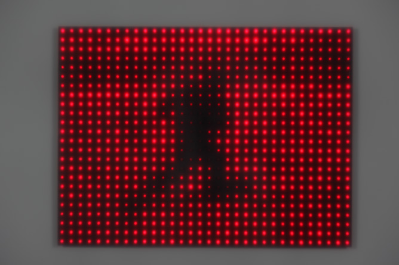

Robotic Arts Intro Fall 2018 (IA277.01)
- Instructor: Lucas Haroldsen (lharoldsen@mica.edu)
- Class Site: yasunaga.work/raif18
- syllabus: syllabus.pdf
- Resources: links.html
09/28: Expression --- [Analog output]

Review
- Analog input and serial monitor
- Serial Plotter
- Variable resistors and thresholds
- variables
- if statement and comparison operators
Today, we will explore:
- Analog output
- Fading LED
- Piezo element
- Controlling the speed of a toy motor
- tone() function and pitches.h -->melody
- Map function
- random function
- Servo motor
- Project 1
Tonight's Code
Tools
- Resistor color code calculator
- LED Series Resistor Calculator
- RGB color code chart
- Hex to RGB Conversion
HIGH ZERO FESTIVAL this weekend!
info
Tonight 9/28 and Tomorrow night 9/29 at Theater Project
Presentaton
Persistence Of Vision

Jim Campbell Running and Falling Series
Study for Fifteen Points by Random International
Double-Taker (Snout) by Golan Levin
Qoobo by Yukai Engineeing
L.S.D Light to Sound Device (Paris)
Benjamin Gaulon
Céleste Boursier

HOMEWORK
Project 1: the midterm
Project 1 is due October 19th. See the details on this link here. Spend this week experimenting with what you have learned so far in this class to think about possibilities for your project. Take some time to learn materials of your choice.
Make some sketches and notes of your ideas and your entry point into your project. Be prepared to talk about your project.